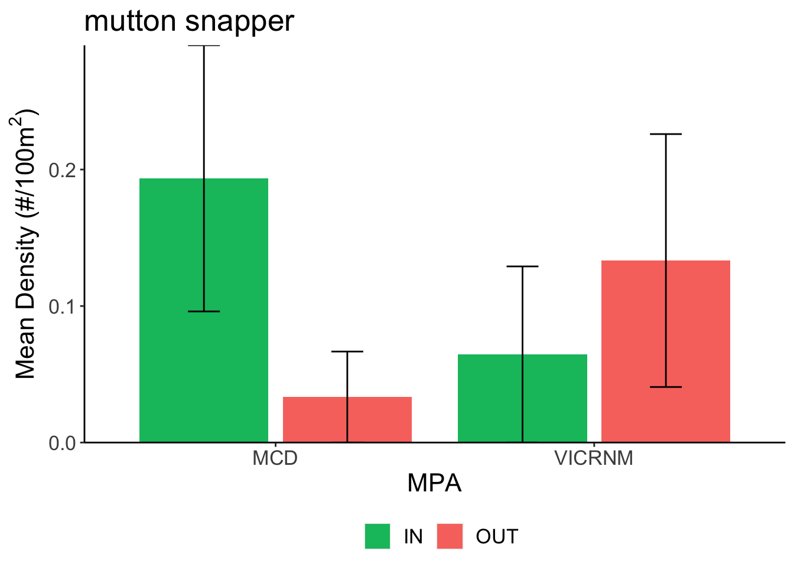
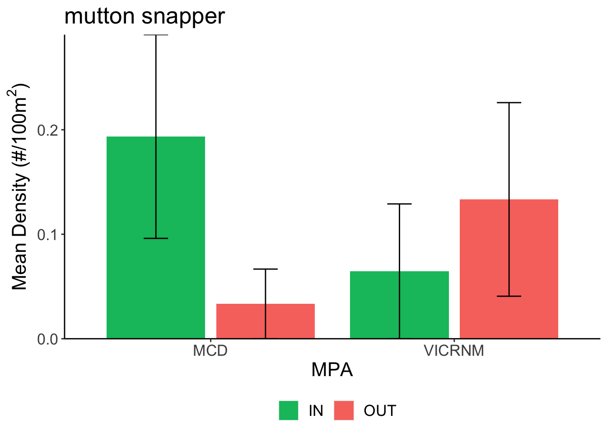
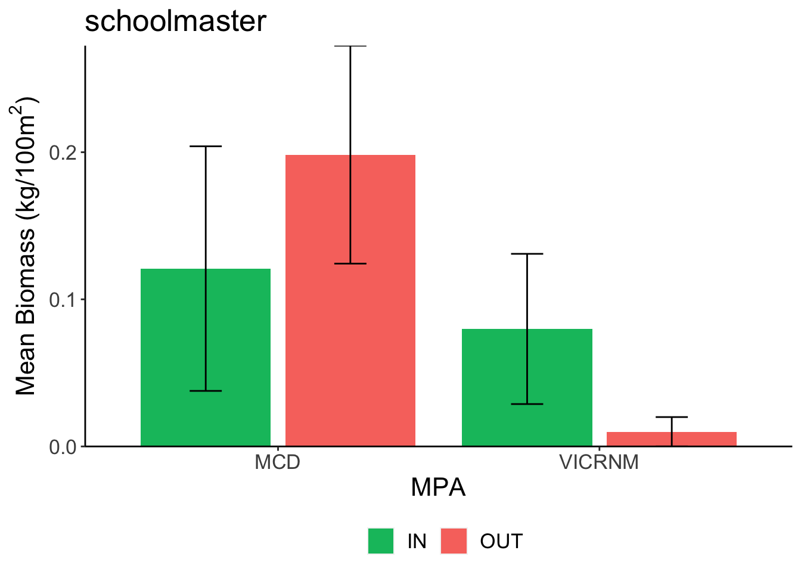
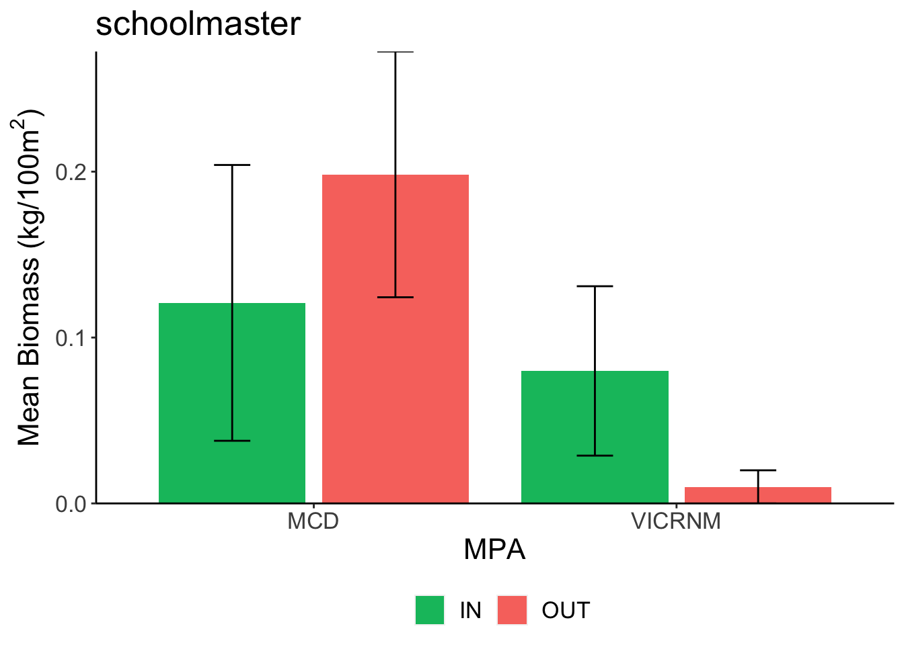
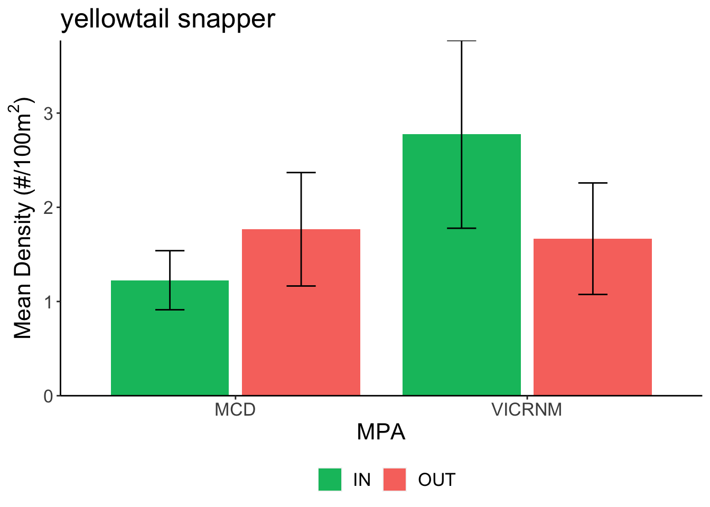
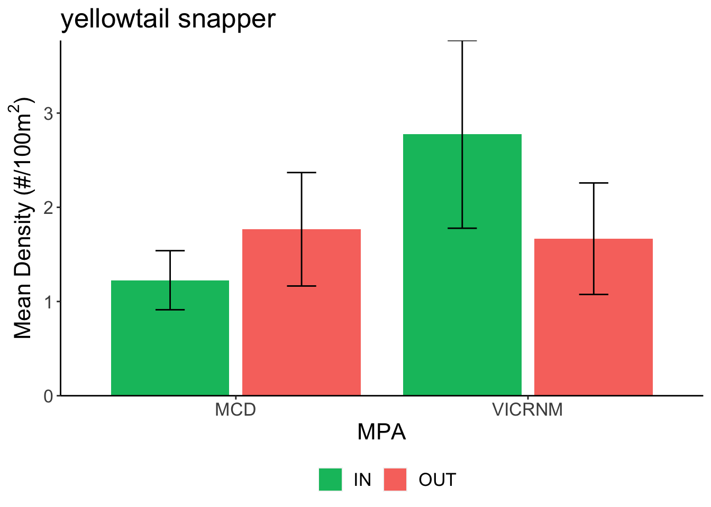

Indicator Species
Sarah Heidmann
10/2/2020
Summary
This document examines patterns in size, density, and biomass of species of interest inside and outside the boundaries of the Hind Bank Marine Conservation District (MCD) and Virgin Islands Coral Reef National Monument (VICRNM).
Species of interest include:
## - coney
## - red hind
## - Nassau grouper
## - hogfish
## - mutton snapper
## - schoolmaster
## - cubera snapper
## - gray snapper
## - dog snapper
## - lane snapper
## - yellowfin grouper
## - yellowtail snapper
## - queen triggerfish


 
 



 


##
## Call:
## lm(formula = midsize ~ MPA * InOut, data = commsize)
##
## Residuals:
## Min 1Q Median 3Q Max
## -25.673 -6.423 -3.173 3.577 66.827
##
## Coefficients:
## Estimate Std. Error t value Pr(>|t|)
## (Intercept) 28.3224 1.1636 24.340 < 2e-16 ***
## MPAVICRNM -5.3039 1.3521 -3.923 9.76e-05 ***
## InOutOUT -0.1493 1.4648 -0.102 0.919
## MPAVICRNM:InOutOUT -1.4463 1.7797 -0.813 0.417
## ---
## Signif. codes: 0 '***' 0.001 '**' 0.01 '*' 0.05 '.' 0.1 ' ' 1
##
## Residual standard error: 10.14 on 607 degrees of freedom
## Multiple R-squared: 0.07538, Adjusted R-squared: 0.07081
## F-statistic: 16.49 on 3 and 607 DF, p-value: 2.578e-10Commercially-important fish species combined were significantly larger in the MCD than the VICRNM, but there was no difference in size across MPA boundaries.
Herbivores
Size frequency distribution of herbivores, separated by MPA and inside/outside MPA boundaries.
Herbivores across depth
Size
## Warning: Removed 3 rows containing missing values (geom_point).Depth at which each size class of herbovores was found, separated by inside/outside MPA boundaries.
##
## Call:
## lm(formula = midsize ~ MPA * InOut, data = herbsize)
##
## Residuals:
## Min 1Q Median 3Q Max
## -8.984 -4.694 -3.414 4.085 27.806
##
## Coefficients:
## Estimate Std. Error t value Pr(>|t|)
## (Intercept) 10.9145 0.1939 56.287 < 2e-16 ***
## MPAVICRNM -3.2745 0.2468 -13.266 < 2e-16 ***
## InOutOUT 0.5695 0.2839 2.006 0.04490 *
## MPAVICRNM:InOutOUT -1.0158 0.3534 -2.874 0.00406 **
## ---
## Signif. codes: 0 '***' 0.001 '**' 0.01 '*' 0.05 '.' 0.1 ' ' 1
##
## Residual standard error: 6.861 on 6605 degrees of freedom
## Multiple R-squared: 0.066, Adjusted R-squared: 0.06558
## F-statistic: 155.6 on 3 and 6605 DF, p-value: < 2.2e-16Herbivores were larger in the MCD than the VICRNM, and larger outside MPAs than inside, but there was a significant interaction between these variables. ### Density
## Warning: Removed 1 rows containing missing values (geom_point).Density of herbivores by depth. Shape indicates the MPA of the site, and color indicates whether the site was inside or outside the MPA.